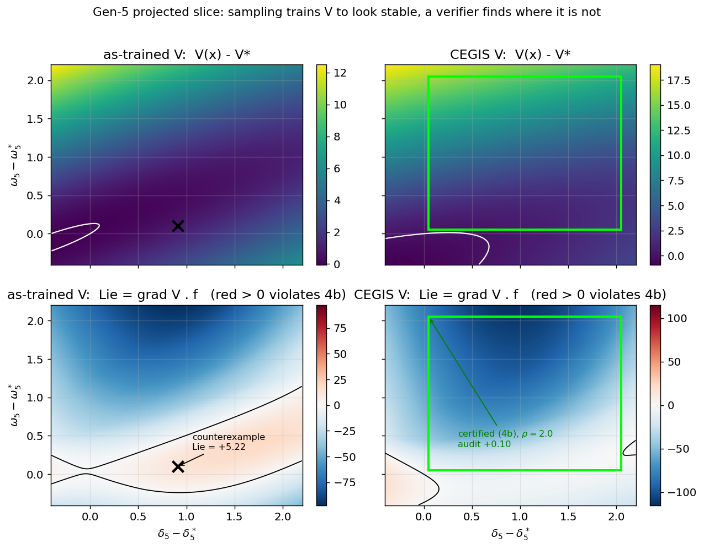
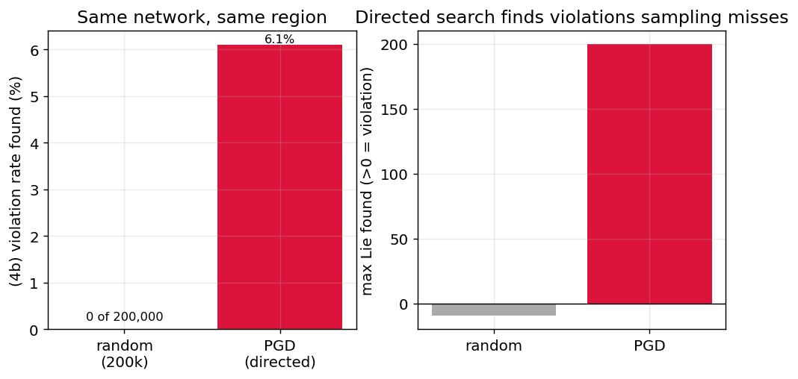
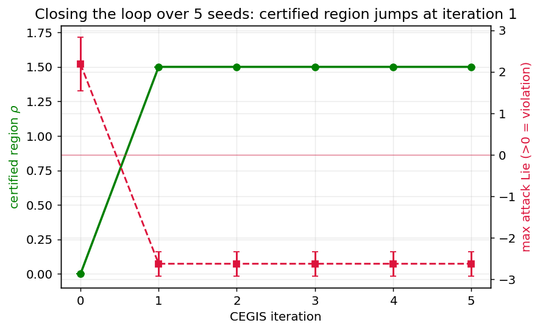
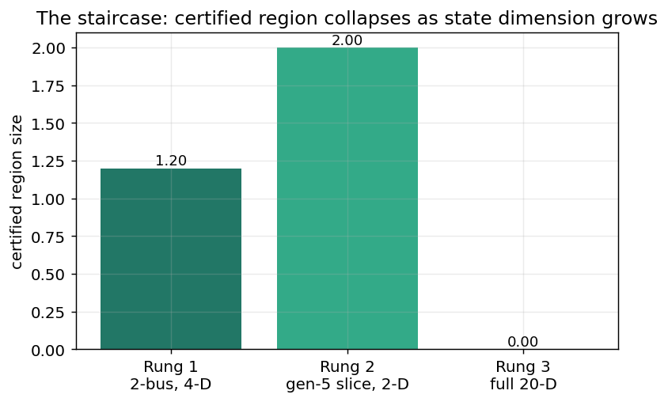

A learned Lyapunov function that passes on 99.98% of samples still fails a verifier. Closing the loop with its counterexamples certifies a real region.
[Paper (PDF)] [Cui & Zhang 2022] [Her code] [Our code] [Colab]

A neural Lyapunov function trained against randomly sampled violations can't be certified, because a certificate quantifies over every point in a region while sampling only ever visits a measure-zero subset, so the network can report a 99.98% empirical satisfaction rate and still fail the Lyapunov conditions on a set that random sampling never lands on. We reproduce the Lyapunov-regularized reinforcement learning of Cui and Zhang for the lossy Kron-reduced New England 39-bus swing model, then use the neural network verifier CROWN with branch-and-bound over the nonlinear swing dynamics to check the conditions over a region rather than a sample. The as-trained network violates both the positive-definiteness condition and the Lie-derivative condition through genuine counterexamples that a directed search finds immediately while 200,000 random samples find none, which means the gap is not a sampling budget you can spend your way out of, it is that the violations concentrate exactly where a random sampler almost never looks. So we close the loop, using the verifier itself as the sampler and feeding its counterexamples back into training, and on the gen-5 slice, a two-dimensional projection that holds the network's other buses at equilibrium and matches the authors' Fig. 2, not the full state, this certifies the Lie-derivative condition out to a sublevel radius \(\rho=2.0\) and an exponential decrease rate \(\beta\) up to 3.97, both audited by an independent attack and cross-checked against a second verifier. The certified region collapses as the state dimension grows, which we quantify rather than hide, and which is exactly where the next work has to go.
TL;DR: reproducing her training gives 99.98% of samples satisfying the decrease condition, yet a verifier finds genuine counterexamples for both Lyapunov conditions that 200,000 random draws miss entirely, and counterexample-guided retraining then certifies the gen-5 slice (a 2-D projection, not the full state) to \(\rho=2.0\) with a certified exponential rate \(\beta\) up to 3.97, an independent attack margin of \(+0.10\) at the boundary, and agreement with an independent JacobianOP verifier.
Transient stability asks whether the generators swing back to a synchronous equilibrium after a disturbance, and the classical certificate for that is an energy function. For a network with resistive losses there isn't one, because the conductance coupling enters the swing equations as a term \(G_{ij}\cos(\delta_i-\delta_j)\) that is not the gradient of any scalar, so no analytic energy function exists (Chiang 1989). That single term is why a valid Lyapunov function for lossy frequency dynamics has been open for decades, and it's the reason the frequency-control problem is the interesting one while the voltage-control problem, whose dynamics are linear, certifies directly without any of this.
With state \(x=(\delta,\omega)\) the lossy swing dynamics on the 10 generator buses are
Cui and Zhang get around the non-existence result by learning \(V_\phi\) as a small ELU network under a training loss that penalizes violations of the Lyapunov conditions on sampled states, and their paper's own last sentence names the gap it leaves: an important future direction is to verify the learned function satisfies the conditions for all points in a region, not just on samples. They report the Lie derivative is slightly positive on about 0.1% of sampled points. This project closes that gap.
The Lie derivative as a boundable graph. Certifying the decrease condition means bounding \(\dot V(x)=\nabla V(x)\cdot f(x,u(x))\) over a box, so the gradient of \(V\) has to live inside the graph the verifier bounds. For a one-hidden-layer ELU network that gradient is analytic, and every operation in it, together with the \(\sin\) and \(\cos\) of the dynamics, is a natively boundable operator, so we write the scalar \(F(x)=-\dot V(x)\) as one computation graph and bound it with CROWN. This specializes the general-purpose route where auto_LiRPA's Jacobian operator expands gradient nodes and GenBaB branches the sin, cos, and ELU nonlinearities, and for a shallow network the analytic gradient is exact and its bounds are tighter.
The equilibrium is a structural trap. The Lie derivative is zero at the equilibrium by construction, so the decrease condition can't hold as a strict inequality on any region that contains it. We handle that the standard way, certifying on an annulus that excludes a small ball around the equilibrium, and reporting an explicit tolerance \(\epsilon\) where one is used. The two-bus gate and the gen-5 slice already exclude the equilibrium, so those certificates, the certified \(\rho=2.0\) result included, run at \(\epsilon=0\) as strict \(F\ge 0\) bounds; the only place a nonzero tolerance is needed is the full-state box that contains the equilibrium, where \(\epsilon=0.05\) in the units of the Lie derivative \(\dot V\) (\(\mathrm{s}^{-1}\), since \(V\) is a dimensionless network output and time is in seconds).
Region of attraction by bisection. The deliverable isn't one verified box, it's a certified sublevel set \(\{x: V(x)\le\rho\}\), found by bisecting on \(\rho\) for the largest set that verifies, which is forward invariant and is a certified inner approximation of the region of attraction. Every verified box is re-checked by an independent projected-gradient attack, and a certificate is rejected if the attack finds any violation, so an unsound bound can't slip through.
Two figures carry the argument. The first is that a verifier finds what sampling can't, the second is that the verifier's own counterexamples are what fix it.

Same network, same region. Uniform random sampling finds a decrease-condition violation in 0 of 200,000 draws, and its best sample has a Lie derivative of \(-9.6\), comfortably negative. A directed projected-gradient attack in the same region drives 6.1% of its starts to a violation, with a maximum Lie derivative of \(+199.9\). The violations are real and the random sampler never lands on them, which is the empirical case for a proof over the region rather than a statistic over a sample.

Feeding sound counterexamples back into training moves the certifiable sublevel radius from 0 to 2.0
in a single iteration, after which the attack finds a minimum \(F\) of \(+0.10\) over the certified
\(\rho=2.0\) region, no further counterexamples appear through five more iterations, and a genuine
counterexample first appears just past the boundary at \(\rho=2.5\). This is the seed-0 result and it
holds on three of the five seeds, with \(\rho=1.5\) on the other two. The same retraining also fixes the
positive-definiteness condition, which the as-trained network violated with a genuine \(V  Branch-and-bound cost grows with input dimension, so we report a staircase rather than claim
full-state verification. A two-machine 4-D gate certifies a real annulus, which is the correctness check.
The gen-5 slice, a 2-D projection with the other buses fixed at equilibrium, certifies to \(\rho=2.0\).
In the full 20-D state the slice-hardened network genuinely
violates the decrease condition even in a box of radius 0.01, because the counterexample-guided training
was scoped to the slice and doesn't transfer, so we report that as a genuine violation with its
counterexample, not as a verifier timeout. That collapse with dimension is the honest boundary of the
method as it stands. Seed 0 shown; the stochastic experiments (training, attack, CEGIS) run over 5 seeds.
Every number traces to a per-seed JSON a script wrote, and every figure regenerates from those JSON files.
Simulation only, CPU wall-clock. Robustness over five seeds: the E4 certified \(\rho\) is \(1.8 \pm 0.24\)
(2.0 on three seeds, 1.5 on two), while Prop-2 \(\beta\) 3.97 and the two-bus gate
\(\rho\) 1.2 are identical across all five, and the directed-attack violation rate is
\(0.079 \pm 0.019\) against a random rate of essentially zero. The whole certification
is cross-checked against auto_LiRPA's
JacobianOP path, the route Prof. Cui named, with zero soundness contradictions, so
the specialized verifier is validated rather than merely trusted. The comparison a reviewer expects is against SMT, since Chang, Roohi, and Gao is Cui's
reference and her paper dismisses SMT as tractable only for small systems. We hand the identical (4b)
condition, the same trained network through the same relu/exp ELU identity, to the \(\delta\)-complete
solver dReal (\(\delta=10^{-3}\)) and check the negation on the 4-D two-bus gate and the gen-5 slice. It
agrees with CROWN everywhere we tested: \(\delta\)-unsat, certifying (4b), on the gate in 0.14s and on the
gen-5 annulus in 0.45s, and \(\delta\)-sat with a counterexample on the as-trained far region where CROWN
also finds a genuine violation. Both certified regions are low-dimensional, so dReal finishes in under a
second and the intractability the citation warns of doesn't bite here; that wall is a full-state
phenomenon, and the full 20-D state is exactly the rung where neither tool certifies. dReal runs on Linux
(WSL), since it ships no Windows wheel. The certificate holds over the stated region and nowhere else. The model is the Kron-reduced lossy
swing model that the authors train against, not full AC power flow, and it omits the explicit damping
term, which the controller supplies. The equilibrium is fixed during training and verification, so a
certificate used to assert stability rather than to regularize would have to account for how the
equilibrium moves under load or parameter change, and this one doesn't. Verification cost grows with
state dimension, and the counterexample-guided training here was scoped to the projected slice, so the
full 20-D result is a genuine violation rather than a certified region, which is the honest boundary of
the method as it stands. We use auto_LiRPA and CROWN, the maintained implementation of the algorithm
family Prof. Cui pointed to, rather than the 2019 IBM CROWN repo, which is TensorFlow-1 and doesn't build
on current Python. Everything is simulation, with no hardware. colab/certify.ipynb runs the (4a) certification and the gen-5 rung of the (4b) staircase
end to end on a free Colab, because she said Colab. A certified region on a slice that grows under counterexample-guided training is the first step toward
learned grid controllers that ship with a proof rather than a sampling statistic, and three directions
follow, ordered by how directly they attack the current headline limitation, the collapse of the certified
region as the state dimension grows. Beyond a single slice. The gen-5 result fixes 16 of the 18 reduced
coordinates at equilibrium, so the immediate step is to let several buses vary together, a 4-D and then
6-D box, and push the staircase up from the projection toward the full state while reporting where the
branch-and-bound subdomain count actually walls off, because that measures the dimensional collapse rather
than asserting it. Certified training instead of post-hoc repair. Retraining on counterexamples
after the fact recovers a region but doesn't stop it collapsing in higher dimension, so the next step is to
differentiate through the CROWN bound (Shi et al., arXiv:2411.18235) and train the network so its certified
region is an objective, which is what could let it survive into dimensions post-hoc CEGIS doesn't reach. An actual fault. The cost and synchronism results we couldn't reproduce need the
post-fault Kron-reduced network for the trip of lines 1-39 and 2-3, so obtaining that network would let the
19% reduction and the gen-9 desynchronization be reproduced faithfully and, more valuably, let the closed
loop be certified through a real fault rather than an initial perturbation.Results
Result Value E0 reproduce: sampled decrease-condition satisfaction 99.98% (her \(\approx\)99.9%) E0 reproduce: \(V>V^\star\) on samples 100% E1 sampling gap: random (200k) vs directed violation rate 0% vs 6.1% E2 (4a) as-trained: verdict on gen-5 annulus genuine violation, \(V-V^\star=-0.008\) E2 (4a) CEGIS: verdict on gen-5 annulus certified \(\rho=2.5\), positive dense margin E3 (4b) as-trained: gen-5 far region genuine violation, \(\dot V=+5.22\) E3 (4b) CEGIS: gen-5 annulus (seed 0) certified \(\rho=2.0\), audit \(+0.10\) E3 Prop-2 CEGIS: certified exponential rate \(\beta\) up to 3.97 E3 bound ladder (IBP / CROWN / CROWN-Opt) on certified annulus -132.0 / -32.5 / +2.0 E3 full 20-D: certified radius 0 (genuine violation at \(r=0.01\)) E4 CEGIS: certifiable \(\rho\), iteration 0 to 1 (seed 0) 0.0 to 2.0 Verifier cross-check: analytic vs JacobianOP soundness contradictions 0 of 24 boxes Re-certification: \(\rho\) (4b) under droop vs learned RNN controller 2.0 vs 2.0 SMT baseline (dReal, \(\delta=10^{-3}\)): 4-D gate / gen-5 slice both certified (\(\delta\)-unsat), 0.14s / 0.45s, agrees with CROWN Limitations
Reproduce
python -m pip install "torch==2.11.0" --index-url https://download.pytorch.org/whl/cpu
python -m pip install numpy scipy matplotlib pyyaml pytest
python -m pip install --ignore-requires-python \
"git+https://github.com/Verified-Intelligence/auto_LiRPA.git"
make quick # smoke-test every path end to end, minutes on CPU
make full # the reported numbers: 5 seeds, every rung
make figures # regenerate every figure from saved JSON
make paper # compile the whitepaper PDF from those figures
Future Directions
Citation
@article{singh2026certifiedlyapunov,
title = {Formal Certification of Neural Lyapunov Functions for Transient Stability in Lossy Power Networks},
author = {Sehaj Singh},
year = {2026},
note = {Problem formulation and supervision by Prof. Wenqi Cui, NYU Tandon ECE},
howpublished = {\url{https://github.com/sehajr-singhs/certified-neural-lyapunov}}
}
@article{cui2022lyapunov,
title = {Lyapunov-Regularized Reinforcement Learning for Power System Transient Stability},
author = {Cui, Wenqi and Zhang, Baosen},
journal = {IEEE Control Systems Letters}, volume = {6}, pages = {974--979}, year = {2022}
}